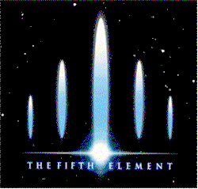
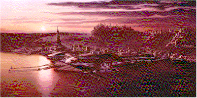

|
|
|
| Movie Credits | Buy It! |
The Fifth Element
Review by Carrie
Gorringe
Posted 9 May 1997
|  | Directed by Luc Besson Starring Bruce Willis, Gary Oldman, Screenplay by Luc Besson |
Attempting to outline the plot complexities of The Fifth Element without giving the game away is a lot like trying to negotiate a field strewn with land mines without a map indicating their placement; sooner or later, the process will blow up in your face, although, in the former instance, I will remain reasonably intact whether or not a few secrets are revealed along the way. To keep the damage to a minimum, however, I will state only that the film concerns itself with the 23rd-century adventures of a cab driver in New York City named Korben Dallas (Willis), a survivor of a spaceship explosion (Jovovich) and a mysterious priest (Holm), all of whom, of course, are not what they seem to represent. Viewers need to know two other things about The Fifth Element. First, these individuals are connected to a mysterious discovery in an Egyptian tomb prior to the First World War, and the appearance of aliens who warn, as sudden visitors are want to do under these circumstances, of impending evil. Second, if, after reading the above, you begin experiencing grim memories of Stargate, place those aside for a minute or two; for all of the hyperbole, both visual and thematic, generally connected with the sci-fi genre (and there’s no immunity from those here), The Fifth Element might be considered genuinely entertaining, provided that several caveats are kept firmly at your mind’s forefront, most of them relating to the narrative itself.
The narrative structure of The Fifth Element wants, with all due desperation, to invite comparisons to a really well-constructed crime thriller of the post-World War II film noir variety. Add seventy to ninety million dollars worth of eye-assaulting special effects, and filmgoers should, by all rights, end up in Blade Runner territory; they might, but the film’s intellectual baggage, or its pretensions thereto, ends up somewhere in Des Moines. Screenwriters Kamen and Besson definitely aspire, on some levels, to the hard-edged, rain-and-fog-drenched dystopia of Ridley Scott’s sci-fi classic; otherwise, they wouldn’t have borrowed so liberally from its visual style (the cramped, chaotic appearance of the future New York City appearing in The Fifth Element, its blinding brightness aside, owes more than a few debts to Syd Mead’s earlier concept of urban misery). And Kamen and Besson do manage to add some innovative twists to their new melange, among them a scene at an Asian food stand that adds new meaning to the term, "home delivery". Then, like so many contemporary screenwriters, they don’t resist the urge to drown the film in yet another vat of ironic sensibilities. As he did with La Femme Nikita, director Besson then conceals thematic emptiness under the veils of lightening-fast editing and attitude . Whatever earnestness then remains is so stretched to the breaking point that the film falls over the edge into campiness, a situation made even more evident by Gary Oldman’s sublime, scenery-chewing performance as one of the archest villains since Ming the Merciless, and the introduction of an annoyingly hysterical drag queen (Tucker) to provide running commentary on the film’s final sequences. On top of all of this, of course, is Willis’ own patented smarmy-charm version of coolness. The resulting detachment of characters from their venue is so strong that it’s often very easy to forget that there are supposed to be serious issues at stake on-screen, unless you consider wholesale destruction of human life from unspeakable evil (which, in this film, resembles a renegade charcoal briquette on steroids) to be a mere trifle in the overall scheme of things. In fact, when the narrative is obliged to finally get around to vanquishing said evil, it seems such a shame to put an end to all the fun the screenwriters are having with the elements of the sci-fi genre, regardless of how much fun the filmgoers might be having – or not.
If you’re looking for a sequel – in thematic terms – to Blade Runner, don’t say you weren’t warned; this is strictly a film for Bruce Willis fans, Gary Oldman fans, and/or SFX/action-film junkies desperate for a fix.

Contents | Features | Reviews | News | Archives | Store
Copyright © 1999 by Nitrate Productions, Inc. All Rights Reserved.